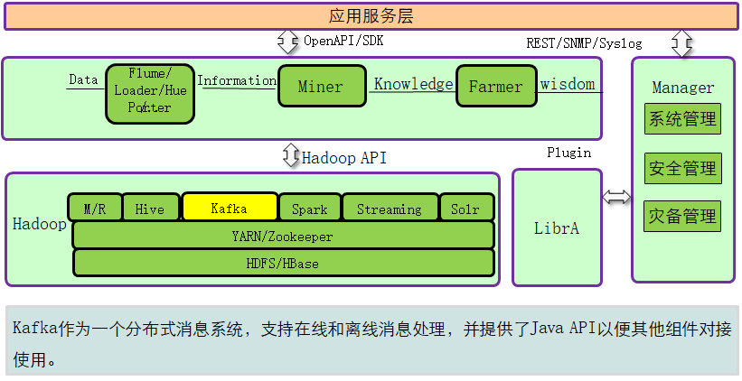

Kafka简介
Kafka定义：
Kafka 是一个高吞吐、分布式、基于发布订阅的消息系统，利用Kafka技术可在廉价PC Server上搭建起大规模消息系统。
Kafka是一个分布式的、分区的、多副本的消息发布-订阅系统，它提供了类似于JMS的特性，但在设计上完全不同，它具有消息持久化、高吞吐、分布式、多客户端支持、实时等特性，适用于离线和在线 的消息消费，如常规的消息收集、网站活性跟踪、聚合统计系统运营数据（监控数据）、日志收集等大量数据的互联网服务的数据收集场景。
注：
- 由LinkedIn开发，并于2011年开源。
- 使用Scala、Java语言实现。
- 在LinkedIn中，用作活动流和运营数据处理管道的基础。
- 现在已经被多家不同公司作为多种类型的数据管道和消息系统使用。
Kafka在FusionInsight中的位置

Kafka架构与功能
Kafka是一个分布式、分区化、多副本的消息发布-订阅系统。生产者（Producer）将消息发布到Kafka主题（Topic），消费者（Consumer）订阅这些主题并消费这些消息。在Kafka集群上一个服务器称为一个Broker。对于每一个主题，Kafka集群保留一个用于缩放、并行化和容错性的分区（Partition）。每个分区是一个有序、不可变的消息序列，并不断追加到提交日志文件。分区的消息每个也被赋值一个称为偏移顺序（Offset）的序列化编号。

Kafka模块间关系

原理：
1.消息可靠性：
Kafka Broker收到消息后，会持久化到磁盘，同时，Topic的每个Partition有自己的Replica（备份），每个Replica分布在不同的Broker节点上，以保证当某一节点失效时，可以自动故障转移到可用消息节点。
2.高吞吐量
Kafka通过以下方式提供系统高吞吐量：
- 数据磁盘持久化：消息不在内存中cache，直接写入到磁盘，充分利用磁盘的顺序读写性能。
- Zero-copy：减少IO操作步骤。
- 数据批量发送：提高网络利用率。
- Topic划分为多个Partition，提高并发度，可以由多个Producer、Consumer数目之间的关系并发来读、写消息。Producer根据用户指定的算法，将消息发送到指定的Partition。
3.消息订阅-通知机制
4. 可扩展性
开源特性：
1.可靠性：
提供At-Least Once，At-Most Once，Exactly Once消息可靠传递。消息被处理的状态是在Consumer端维护，需要结合应用层实现Exactly Once。
2.高吞吐
同时为发布和订阅提供高吞吐量。
3.持久化
将消息持久化到磁盘，因此可用于批量消费，以及实时应用程序。通过将数据持久化到硬盘以及replication防止数据丢失。
4.分布式
分布式系统，易于向外扩展。所有的Producer、Broker和Consumer都支持部署多个形成分布式的集群。无需停机即可扩展系统。
Kafka拓扑结构图

注：
- 一个典型的Kafka集群中包含若干Producer（可以是web前端产生的Page View，或者是服务器日志，系统CPU、Memory等），若干Broker（Kafka支持水平扩展，一般broker数量越多，集群吞吐率越高），若干Consumer，以及一个Zookeeper集群。Kafka通过Zookeeper管理集群配置，选举Leader，以及在Consumer发生变化时进行rebalance。Producer使用push模式将消息发布到Broker，Consumer使用pull模式从Broker订阅并消费消息。
- Broker：Kafka集群包含一个或多个服务实例，这些服务实例被称为Broker。
- Producer：负责发布消息到Kafka Broker。
- Consumer：消息消费者，从Kafka Broker读取消息的客户端。
Kafka Topics（相当于某个类别的队列）

注：
- 每条发布到Kafka的消息都有一个类别，这个类别被称为Topic，也可以理解为一个存储消息的队列。例如：天气作为一个Topic，每天的温度消息就可以存储在“天气”这个队列里。
- 图片中的蓝色框为Kafka的一个Topic，即可以理解为一个(主题)队列，每个格子代表一条消息。生产者产生的消息逐条放到Topic的末尾。消费者从左至右顺序读取消息，使用Offset来记录读取的位置。
Kafka Partition（有序不可变）
每个Topic 都有一个或者多个Partitions（分区）构成。每个Partition都是有序且不可变的消息队列。引入Partition机制，保证了Kafka的高吞吐能力(并发)

注：
- 每个topic被分成多个partition(区),每个partition在存储层面对应一个log文件，log文件中记录了所有的消息数据。
- 引入Partition机制，保证了Kafka的高吞吐能力，因为Topic的多个Partition分布在不同的Kafka节点上，这样一来多个客户端（Producer和Consumer）就可以并发访问不同的节点对一个Topic进行消息的读写。

- Topic的Partition数量可以在创建时配置。
- Partition数量决定了每个Consumer group中并发消费者的最大数量。
Consumer group A有两个消费者来读取4个Partition中数据。
Consumer group B有四个消费者来读取4个partition中数据。
注：
Kafka Partition偏移量（offset）
每条消息在文件中的位置称为offset（偏移量），offset是一个long型数字，它唯一标记一条消息。消费者通过（offset、partition、topic）跟踪记录。

Kafka Partition副本（一般是跟主设备进行交互，备负责同步）（互为leader）

- 副本特性：
- 副本以分区为单位。每个分区都有各自的主副本和从副本。
- 主副本叫做Leader，从副本叫做Follower。Follower通过拉取的方式从Leader中同步数据。
- 消费者和生产者都是从Leader中读写数据，不与Follower交互。
- 为了提高Kafka的容错性，Kafka支持Partition的复制策略，可以通过配置文件配置Partition的副本个数。Kafka针对Partition的复制同样需要选出一个Leader，同时由该Leader负责Partition的读写操作，其他的副本节点只是负责数据的同步。如果Leader失效，那么将会有其他follower来接管(成为新的Leader)，如果由于Follower自身的性能，或者网络原因导致同步的数据落后Leader太多，那么当Leader失效后，就不会将这个Follower选为Leader。由于Leader的Server承载了全部的请求压力,因此从集群的整体考虑,Kafka会将Leader均横的分散在每个实例上，来确保整体的性能稳定。一个Kafka集群各个节点间可能互为Leader和Flower。

注：
Kafka中partition replication之间同步数据，从partition的leader复制数据到follower只需要一个线程(ReplicaFetcherThread)，实际上复制是follower(一个follower相当于consumer)主动从leader批量拉取消息的，这极大提高了吞吐量。

注：
- Kafka中每个Broker启动时都会创建一个副本管理服务(ReplicaManager)，该服务负责维护ReplicaFetcherThread与其他Broker链路连接关系。该Broker中存在的Follower partitions对应的leader partitions分布在不同的Broker上，这些Broker创建相同数量的ReplicaFetcherThread线程同步对应partition数据。Kafka中partition间复制数据是由follower(扮演consumer角色)主动向leader获取消息， follower每次读取消息都会更新HW状态（High Watermark，用于记录当前最新消息的标识）。每当Follower的partitions发生变更而影响leader所在Broker时，ReplicaManager就会新建或销毁相应的ReplicaFetcherThread。
- 简单的说就是，follower启动一线程用于同步leader数据。
Kafka Logs
Kafka Log Cleanup
简介：
日志的清理方式有两种：delete 和 compact。
删除的阈值有两种：过期的时间和分区内总日志大小。
compact：
Compact的清理方式是指至少保留每个key值最新的value消息。例如：一条消息包含Key和Value两个内容，Key为K1的有3条消息，其值分别为V1、V3、V4，则采用Compact的清理方式时，只保留最新的那条消息，即值为V4的消息。（如何判断哪条消息为最新消息，因为消息是顺序存储的，offset大的即为后存入的、最新的消息）。
简单的说：只保留最新版数据。

Kafka Message
Kafka消息传输：（不太懂这个表）

- 同步发送：client每写一条，发送一条到broker。可靠性高，常用。
- 异步发送：client先将数据写入一buffer，待写入达到一定条数后，将buffer内数据一次性发送到broker。容易造成数据丢失，一般不用。
- 同步复制、异步复制与同步发送、异步发送原理相同。常用同步发送带确认+同步复制。
Kafka Cluster Mirroring

注：
- Kafka Cluster Mirroring是Kafka跨集群数据同步方案，通过Kafka内置的MirrorMaker工具来实现。
- 图中展示了如何从源Kafka集群（Source Cluster）到目标Kafka集群(Target Cluster)同步数据，即通过MirrorMaker工具中的Consumer从源集群消费数据，然后再通过内置的Producer将数据重新发送到目标集群。
Kafka关键流程
Producer写数据
- 总体流程

- Producer连接任意存活的Broker，请求制定Topic、Partition的Leader元数据信息，然后直接与对应的Broker直接连接，发布数据。
Consumer读数据

- 总体流程：
- Consumer连接指定TopicPartition所在的LeaderBroker，用主动获取方式从Kafka中获取消息。